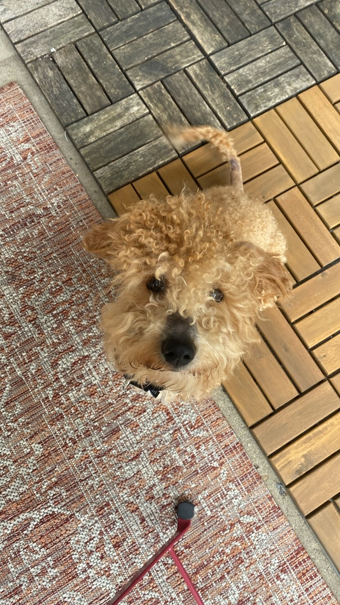

I am a PhD student at Carnegie Mellon University in the School of Computer Science's Human-Computer Interaction Institute.
I am advised by Professor Haiyi Zhu in the Social AI Group.
My research is in social computing + mental health. I am interested in how social technology can enable personal and community well-being (e.g. mental health, social relationships) in proactive ways — those that are self-sustaining, self-correcting, or promote positive behaviors — rather than retrospective handling of harm. I use any relevant methods, but most often draw from computational social science methods.
Hi, I'm Anna! Before graduate school, I graduated from Cornell University with a BS in Computer Science in 2019. At Cornell, I worked on a world-class autonomous airplane project team and taught extensively for undergraduate computer science courses. I also worked as a software engineer @ Amazon on recommender systems and the eCommerce platform before starting my PhD.
Outside of research, I enjoy drawing, ceramics (wheel-throwing), papermaking, sewing clothes, watching UFC, reading, and listening to neo-psychedelic & hard rock music!
You can find some of my random art scraps (mostly in pop surrealism style) at @brainfree.ze and things I sell for charity at my online store.
I also really enjoy discussing and learning about 🌱 sustainable living & animal rights, ❤️🩹 emotional health, and ☸️ mindfulness.
My work has been funded by the Center for Machine Learning & Health as both a 2022 Fellow and 2024 Fellow.
I am always excited to chat about social technologies and/or tech that helps people feel happy (e.g. healthier, joyful, safe, ...). Email me at: annafang [at] cmu [dot] edu.
(* = equal contribution)
☆ Shaping Online Dialogue: Examining How Community Rules Affect Discussion Structures on Reddit. Anna Fang, Chris Wenjie Yang, Haiyi Zhu
I was formerly a youth & young adult competition artist in Indiana for a decade, primarily working in graphite portraits. Although I no longer compete or sell original pieces, I enjoy experimenting recently in things like pop surrealism (i.e. low brow art) and portrait sketches using a variety of mediums. I also enjoy other visual & applied art (i.e. ceramics, jewelry-making, papermaking).
Below is info about the wonderful animal(s) currently in my foster care from the Humane Animal Rescue of Pittsburgh. Email me at annafang [at] cmu [dot] edu for adoption info!
(Updated: July 2024) Billions -- 1 year old -- 10 pounds -- lively, chaotic, sweet, very kissy!
